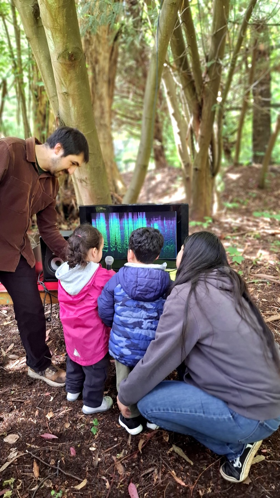
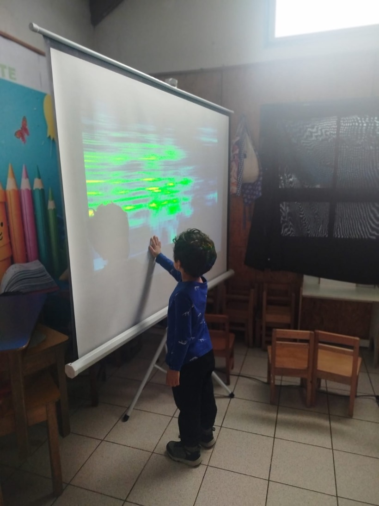
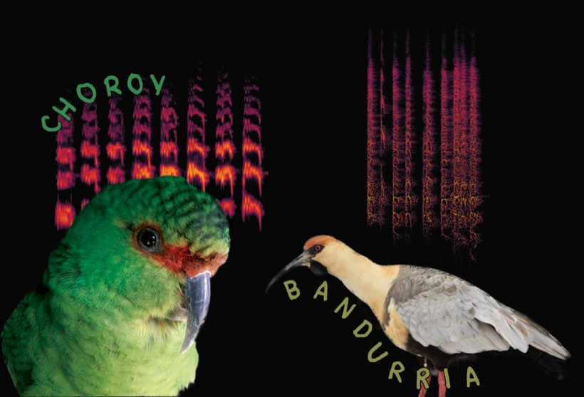

Educación artística
Anímate: a dar vida a los objetos
Programa Acciona Barrio · Villa El Estero, Cholchol · 2025
Taller de animación stop-motion con niños, niñas y sus familias, en colaboración con la artista titiritera Marcia Olave. Un proceso donde la participación y el compromiso de las familias fue parte fundamental de la creación.
Sonidos que me rodean
Programa Acciona · Jardín Princesita, Curacautín · 2025



Proyecto de exploración sonora y sensorial con niños y niñas. Utilizamos la tecnología para acercarnos a la naturaleza desde una perspectiva nueva, estimulando el asombro con el mundo que nos rodea. Espectrogramas, imitación sonora, amplificación de objetos e intervención sensorial del espacio.
Ritos Cotidianos
Programa Acciona · Escuela Japón, Cherquenco · 2025
Exploración de la identidad y el entorno con niñas y niños de NT2, a través de la experimentación con diversas formas de expresión plástica, sonora y audiovisual. Relacionamos objetos concretos con actividades significativas y frecuentes. Los registros audiovisuales fueron realizados por las propias niñas y niños.
¿Estás pensando un proyecto para tu comunidad educativa?
Conversemos →